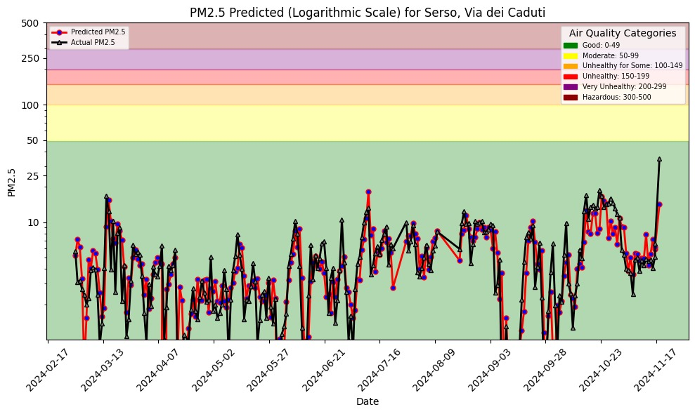

Jacopo Dallafior | KTH Royal Institute of Technology
This project focuses on air quality prediction using a machine learning system with a rolling window approach. Data from air quality and weather sources is processed and stored in a feature store for both batch and real-time pipelines. The main goal is to forecast PM2.5 levels in Serso via dei Caduti, leveraging scalable ML pipelines for training and inference.
Initializes the feature store with historical weather and air quality data from sources like aqicn.org and open-meteo.com.
Automatically updates feature groups daily with new measurements and forecasts.
Trains an XGBoost regression model using combined weather and air quality features. Evaluation metrics include MSE and R².
Performs batch predictions weekly and monitors model performance over time.
The rolling window approach improves prediction stability and accuracy over standard models.
Comparisons with standard methods highlight the improved performance of rolling window modeling in both prediction error (MSE) and explained variance (R²).